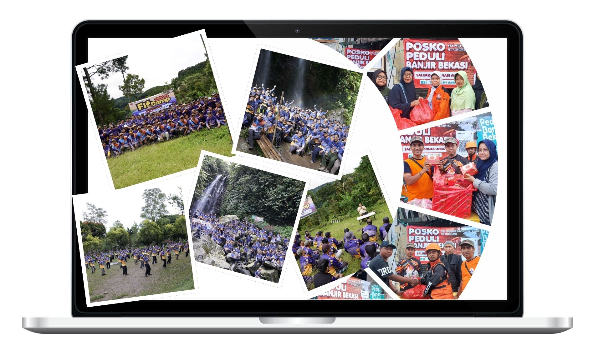
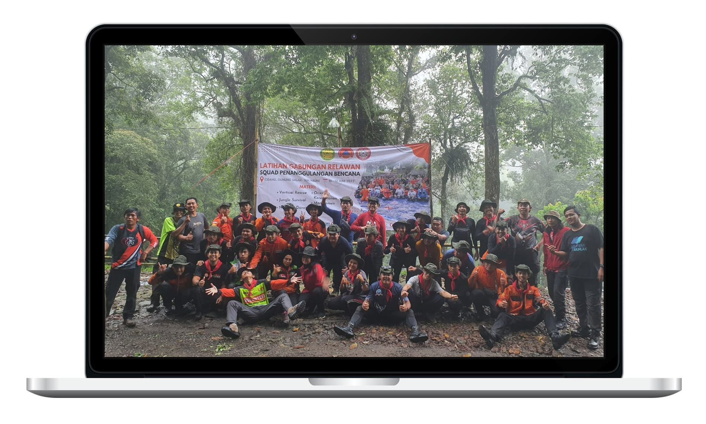
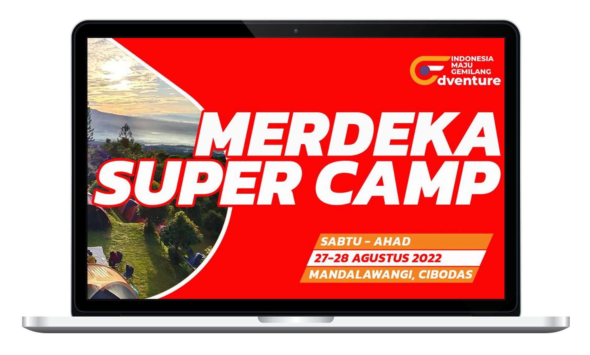

🐧
Linux Training
LinuxLab Cyber
A guided Linux learning app with lessons, tasks, hints, and a terminal for hands-on command practice.
Hello! I'm Cak Gup (Mukhammad Gufron Ikhsan), an IT specialist (Pranata Komputer Ahli Muda) at the Ministry of Finance's Directorate of Treasury Information Systems and Technology. I specialize in cybersecurity, IT infrastructure security, and IT governance, and hold a master's degree in information security engineering.



Baghasasi Foundation is a nonprofit organization based in Bekasi City, dedicated to community service and national development. I managed its IT infrastructure, developed its digital presence, and designed visual materials to support community engagement.

Relawan Indonesia coordinates volunteers to support rapid disaster response and relief efforts across Indonesia. I helped manage its volunteer databases securely and maintained communication channels during critical operations.

IMG Adventure is an outdoor adventure organization that promotes holistic well-being. I led the development of its online portal, streamlined event registration, and implemented security best practices to protect user data.
Alongside my public service work, I develop digital projects to benefit the ummah (Muslim community). Explore my public repositories for Islamic outreach (dakwah), education, community activities, and cybersecurity learning. Each project below includes links to its repository and public website. Please check the project license before reusing its code.
A guided Linux learning app with lessons, tasks, hints, and a terminal for hands-on command practice.
A practical learning portal for web security, featuring isolated exercises on OWASP vulnerabilities, progressive hints, and response visualizations.
A treasury learning and assessment platform with nine practice sets, each containing 30 case-based and analytical questions with answers and explanations.
An independent practice app for exploring 14 managerial and sociocultural competencies.
A static web app for practicing commands used in the practical component of BSSN penetration tester certification.
A lightweight progressive web app with offline support for memorizing and reviewing the Quran, submitting recitations, and tracking learning progress.
An integrated platform for managing student records, academic programs, finances, Quran memorization (tahfidz), activities, and administration at a pesantren (Islamic boarding school).
A mobile-friendly app for prayers and devotional recitations (wirid) at Pondok Pesantren Sunan Ampel Jombang, with offline support and daily prayer times.
A personal portfolio template to document professional work, community activities, and digital contributions.
A simple microsite for foundations, community groups, and social organizations to share their profiles and activities.
A dashboard concept for mosque information, financial transparency, activities, and community services.
A lightweight page for sharing short links to campaigns, community activities, events, and public resources.
A structured security testing guide to support learning, documentation, and responsible application assessment.
A collection of simple browser-based tools for basic security checks and cybersecurity learning.
A reusable digital wedding invitation template for families who need a simple, elegant online invitation.
An Islamic invitation template that can be adapted for community events, Islamic study gatherings (kajian), weddings, and family gatherings.
An interactive genealogy website that helps preserve family history and strengthen family ties (silaturahmi) across generations.
A lightweight static web page for reading Al-Ma'tsurat Wazifah Sugro as part of daily remembrance (dhikr), with straightforward deployment to GitHub Pages.
A static web prototype with a practical workflow for managing qurban programs at foundations, mosques, and community organizations.
A lightweight family task management app that helps develop good habits, trustworthiness (amanah), discipline, and responsibility at home.